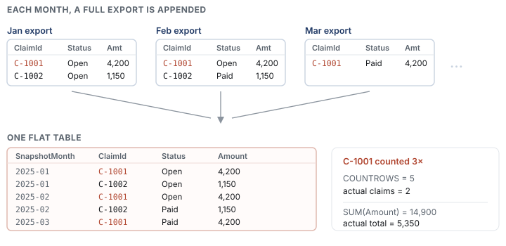
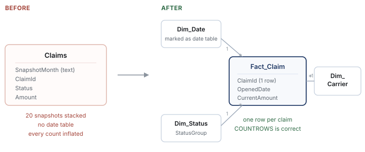

Interactive article / Dimensional modelling
The snapshot table that quietly triples your numbers
Every metric is wrong, and every metric still looks completely reasonable.
Here's a pattern I've now run into enough times to recognise it from across the room. Someone needs history in a report. There's no warehouse table for it, but there is a tracker somebody exports every month. So the export gets appended to a table, month after month, and eighteen months later that table is the source for a dashboard the business checks every Monday.
And every number on it is inflated.
What makes this one expensive isn't the bug. It's that the output stays believable. A claim count that should read 400 reads 6,800 — and nobody's gut reaction fires on a number that big, because nobody has an intuition for what the number should be. That's the whole reason they built the dashboard.
The data below is generated. The pattern is generic — I've hit it in claims tracking, open-order reporting, and pretty much anywhere a report gets built on top of a periodically exported workbook.
What's actually in the table
Each export is a complete dump of every open record at that moment, plus a column noting when it was taken. Append them and the same record shows up once per month it stayed open:

Write the obvious measures against that and they're both wrong:
Total Claims = COUNTROWS( Claims ) -- 5, should be 2
Total Amount = SUM( Claims[Amount] ) -- 14,900, should be 5,350
Two claims is easy to eyeball. The problem is that nobody is looking at two claims — and the gap grows every month the export runs. Drag this:
40 synthetic claims opening and resolving over a year. At one month the numbers agree — which is exactly why this passes review on the day it's built.
That last point is the trap. On day one the flat table is correct, because there's only one snapshot in it. The report gets signed off, and the error accrues quietly from month two onward.
Worse, the error compounds in a specific direction. A "claims over time" chart shows a confident upward trend that's purely the table getting taller each month. I've seen that chart presented as a genuine business trend. It's a very convincing artefact.
Confirming it in one query
If distinct business keys sit well below row count, you're stacking:
SELECT
COUNT(*) AS total_rows,
COUNT(DISTINCT ClaimId) AS distinct_claims,
COUNT(DISTINCT SnapshotMonth) AS snapshots,
CAST(COUNT(*) AS FLOAT)
/ NULLIF(COUNT(DISTINCT ClaimId), 0) AS rows_per_claim
FROM Claims;
rows_per_claim around 1.0 and you're fine. Close to the snapshot count means almost
everything persists across every period. In between — the usual answer — means records hang
around for a while and then resolve, which is exactly what you'd expect from claims or open
orders.
Two follow-ups worth running before you touch anything. Does (ClaimId, SnapshotMonth)
uniquely identify a row? That tells you the real grain. And does Amount ever change
between snapshots for the same claim? That tells you whether collapsing is safe or whether you're
about to throw away history.
First, decide what the table is for
Don't reshape yet. There's a question to answer, and it's a business question rather than a technical one: does anyone actually need point-in-time?
- If yes — someone genuinely asks "how many were open at the end of March?" — then keep every row. One row per claim per month is the correct grain and the table is fine. Your measures are the problem.
- If no — they want current state and lifecycle dates — collapse to one row per claim.
In my experience it's almost always the second, built accidentally on the first. Ask the business directly, though. Guessing here means rebuilding twice.
Collapsing it
Assuming current state plus the ability to trend by when things happened, reduce to one row per claim and keep the first and last time you saw it:
WITH ranked AS (
SELECT
ClaimId,
Status,
Amount,
OpenedDate,
SnapshotMonth,
ROW_NUMBER() OVER (
PARTITION BY ClaimId
ORDER BY SnapshotMonth DESC
) AS rn,
MIN(SnapshotMonth) OVER (PARTITION BY ClaimId) AS first_seen,
MAX(SnapshotMonth) OVER (PARTITION BY ClaimId) AS last_seen
FROM Claims
)
SELECT
ClaimId,
Status AS CurrentStatus,
Amount AS CurrentAmount,
OpenedDate,
first_seen AS FirstSeenMonth,
last_seen AS LastSeenMonth
FROM ranked
WHERE rn = 1;
Now COUNTROWS means what everyone assumed it meant, because the grain finally matches
the word "claim".
Then give it a real date table
A text SnapshotMonth column can't do time intelligence. It sorts alphabetically,
DATESINPERIOD won't look at it, and every month-over-month calculation turns into a
hand-rolled workaround that someone will have to maintain. Build the date dimension:
Dim_Date =
VAR MinDate = MIN( Fact_Claim[OpenedDate] )
VAR MaxDate = MAX( Fact_Claim[OpenedDate] )
RETURN
ADDCOLUMNS(
CALENDAR( MinDate, MaxDate ),
"Year", YEAR( [Date] ),
"MonthNumber", MONTH( [Date] ),
"MonthName", FORMAT( [Date], "MMM" ),
"MonthStart", DATE( YEAR([Date]), MONTH([Date]), 1 ),
"YearMonth", FORMAT( [Date], "YYYY-MM" )
)
Mark it as a date table, sort MonthName by MonthNumber (or spend an
afternoon wondering why April comes first), and relate it one-to-many with a single filter
direction.

Measures that read like the question
Claim Count = COUNTROWS( Fact_Claim )
Open Claims =
CALCULATE(
[Claim Count],
Dim_Status[StatusGroup] = "Open"
)
Open Claims % =
DIVIDE( [Open Claims], [Claim Count] )
Claim Count MoM % =
VAR Current = [Claim Count]
VAR Prior =
CALCULATE(
[Claim Count],
DATEADD( Dim_Date[Date], -1, MONTH )
)
RETURN
DIVIDE( Current - Prior, Prior )
DIVIDE rather than / everywhere. It returns blank on a zero denominator
instead of an error, and a blank renders as an empty cell rather than taking out the whole visual.
If you do need point-in-time
Keep the snapshot grain, but stop writing measures that pretend it isn't there. Either scope to the latest snapshot explicitly:
Claims (Latest Snapshot) =
VAR LatestSnapshot =
CALCULATE(
MAX( Fact_Snapshot[SnapshotMonth] ),
ALL( Fact_Snapshot )
)
RETURN
CALCULATE(
COUNTROWS( Fact_Snapshot ),
Fact_Snapshot[SnapshotMonth] = LatestSnapshot
)
— or promote SnapshotMonth to its own dimension so every visual is explicitly
filtered to one period. What you can't do is leave it unfiltered and hope, because unfiltered it
sums across all snapshots and you're back where you started.
Before you ship it
- Distinct business keys in the source match row count in the new fact table.
- Total amount ties to a hand-written
SELECT SUM(...)over deduplicated source. - Every visual points at the date dimension, not a leftover text column on the fact.
- No measure divides with
/where the denominator can be zero or blank. - Someone in the business has checked the new numbers against something they already trust.
That last one is the step people skip, and it's the one that matters. Be ready for the corrected figures to land badly — a claim count dropping from 6,800 to 400 is a conversation, not a deployment. Have the reconciliation in your hand before you show anyone, because the first question will be "so which number was wrong, and for how long?"